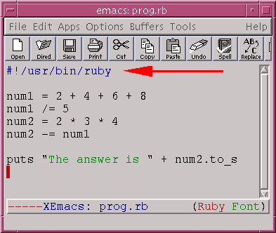

Congratulations! Now that you have made it this far, you are ready to start writing programs.
Grab a text editor and type in the following:
puts "Hello World"
Save the file as hello.rb and run it by typing
ruby hello.rb
puts is named so because it will put an object as a String. The line gets printed to the terminal.
Here is another example:
Notice what we did. name is a string. Therefore, it can be added to other strings, like we saw earlier.
| Note: When you make a Ruby program, only the lines with puts will be printed to the screen. |
In the last chapter we typed this in irb:

Put this into one file. Save it and run it.
Suppose that we want the computer to say "The answer is 20". We can't type this:
puts "The answer is " + num2 # --> Error
We can only add strings to strings. Therefore, we need to convert the integer num2 to a string. We know that we can do this with the Integer#to_s method:
If you are running Linux or Unix, you can make your Ruby programs executable, so they can be run like any other program.
First, you need to know where Ruby is installed in your system. Type 'which ruby' on a terminal:
Precede this by '#!' (pronounced "sharp bang") and make that the very first line of your program.
Now you can type 'chmod +x prog.rb' to make the program executable ('+x' means "executable").
Warning:
Make sure that you type this exactly and that it's the very
first line of your program.
|
Redo the excercises of the previous section. But this time as programs instead of using irb.
Finish the following program:
name = "Daniel" age = 24
So that the program prints "Daniel is 24 years old".